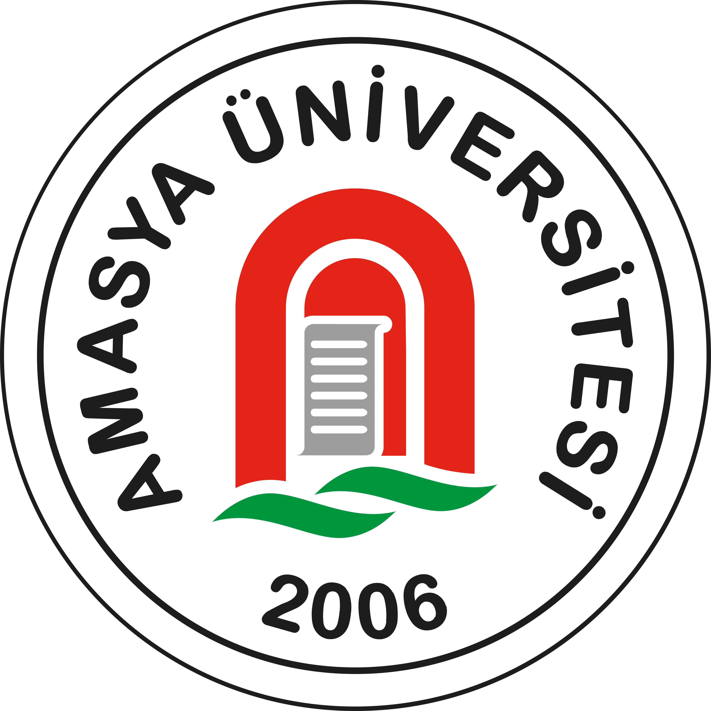

Hem sunum hem PDF.
• Sunmak: tam ekran (F11), ok tuşlarıyla geç.
• PDF: Ctrl/Cmd+P → PDF olarak kaydet → Yatay → Kenar boşlukları Yok → “Arka plan grafikleri”ni AÇ. Her slayt bir sayfa; gri notlar PDF’e çıkmaz.
• Kapaktaki [Adın] alanlarını dosyada düzenle.

floq
Çok-protokollü, federe sosyal ağ
Veysel OLAM — Bilgisayar Mühendisliği Danışman: Dr. Öğr. Üyesi Huzeyfe Muhammed KOCABAŞ
Amasya Üniversitesi · 2026
Konuşma: Merhaba, ben [ad]. Bitirme projem floq. floq, kendi sunucunuzda çalışabilen ve üç farklı sosyal ağ dünyasını birbirine bağlayan bir sosyal ağ. Yaklaşık yirmi dakikada hem nasıl çalıştığını anlatacağım hem canlı göstereceğim.
Problem02
Bugün iki kötü seçenek var
Merkezi platformlar: veri sende değil, algoritma kapalı
Özgür alternatifler birbiriyle konuşmuyor
Mastodon, Bluesky, Nostr → ayrı adalar
Konuşma: Bugün iki kötü seçenekle karşı karşıyayız. Birincisi merkezi platformlar — verimiz bize ait değil, algoritma kapalı kutu. İkincisi bu sorunları çözen özgür alternatifler: Mastodon, Bluesky, Nostr. Ama her biri ayrı bir ada; birbirleriyle konuşamıyorlar.
Çözüm03
floq üç adayı tek köprüde birleştirir
ActivityPub + AT Protocol (Bluesky) + Nostr
Modern, günlük kullanıma uygun arayüz
Kendi sunucunda çalıştırılabilir
Konuşma: floq tam buraya giriyor. Bu üç protokolü tek uygulamada birleştiriyor. floq'taki kullanıcı, Mastodon'daki birini de Bluesky'deki birini de aynı yerden takip edip etkileşebiliyor. Üstelik modern bir arayüzle. İsteyen kendi sunucusunda çalıştırabiliyor.
Nasıl04
Nasıl kurulu?
Önyüz: Next.js · Arka uç: Fastify
Veritabanı: PostgreSQL
Kuyruk: Redis + BullMQ · Docker
Federasyon mesajları kuyrukla teslim edilir → yük altında ayakta kalır.
Konuşma: Önyüz Next.js, arka uç Fastify, veritabanı PostgreSQL. Önemli karar: başka sunuculara giden mesajlar doğrudan değil, arka planda bir iş kuyruğuyla teslim ediliyor. Böylece karşı sunucu yavaş ya da çökmüş olsa bile sistem ayakta kalıyor, mesaj kaybolmuyor.
Nasıl05
Sunucular birbiriyle nasıl konuşur?
WebFinger → kullanıcıyı bul
HTTP Signatures → kimliği doğrula
inbox / outbox → gönderiyi teslim et
Hazır kütüphane değil — sıfırdan yazıldı
Konuşma: Federasyonun kalbi üç adım: WebFinger ile karşı sunucudaki kullanıcıyı buluyoruz, her isteği dijital imzayla doğruluyoruz, gönderiyi karşı sunucunun gelen kutusuna teslim ediyoruz. Bunu hazır kütüphaneyle değil, protokolü kendim yazarak yaptım.
Nasıl · Özgünlük06
En özgün kısım: çift yönlü köprü
floq → Bluesky paylaş
Bluesky → floq içe aktar
Nostr köprüsü
En zor problem: sonsuz döngüyü engellemek
Konuşma: Projenin en özgün kısmı burası. Bluesky köprüsü çift yönlü: floq'a yazdığınız Bluesky'ye gidiyor, Bluesky'de yazdığınız floq'a geliyor. Asıl zorluk döngüyü engellemekti — içerik sonsuza dek gidip gelmesin diye her gönderiye kimlik işaretleyip kendi ürettiğimi tanıyan bir koruma yazdım.
Canlı Demo
flq.social
1 · Gönderi at — akışta anında çık • 2 · Keşfet'te başka sunucudan gelen gönderi • 3 · Ayarlar → Köprüler: Bluesky + “Son senkron” • 4 · Bir Moment + müzik kartı
Konuşma: Şimdi en güzel kısma geçelim. Bu anlattıklarım maket değil — flq.social'da gerçekten canlı. Birkaç dakika gezdireyim. (Yedek: internet çökerse ekran görüntülerinden devam et, panik yok.)
Titizlik08
Sosyal ağ = sorumluluk
Çocuk koruma (13+ yaş, kısıtlı mod)
Kötüye-kullanım raporlama (CSAM dahil)
Aylık şeffaflık raporu
Engelleme/rapor federe ağa da iletilir
Konuşma: Sosyal ağ işletmek sorumluluk demek. Yaş korumasını, raporlamayı ve aylık şeffaflık raporunu baştan tasarladım. Engelleme/rapor sinyalleri sadece floq'ta kalmıyor, federe ağdaki diğer sunuculara da iletiliyor.
Titizlik · Düşünce09
Yol boyunca öğrendiklerim
Bir güvenlik açığını yakalayıp kapattım; canlı sistemde dağıtım disiplini
Merkeziyetsizlik soyut değil, gündelik bir karşılığı var:
Hesabını ve takipçilerini başka bir sunucuya taşıyabilmek
Platform kapanınca ya da kuralları değişince mahsur kalmamak
Önemli olan “protokol” değil — deneyimin tanıdık olması
Konuşma: Teknik tarafta bir güvenlik açığını fark edip kapattım, canlı sistemde dağıtım disiplinini öğrendim. Ama daha genel bir şey de gördüm: merkeziyetsizlik kulağa soyut gelse de gündelik bir karşılığı var — hesabını taşıyabilmek, bir platform kapanınca takipçilerini kaybetmemek, tek bir şirketin kurallarına mahkûm olmamak. Ve şunu da öğrendim: çoğu insan “protokol” kelimesini umursamaz; önemli olan deneyimin tanıdık ve kolay olması. Abartmaya gerek yok, fark buradan başlıyor.
Katkı10
Bu projenin özgün katkısı
Üç protokolü tek üründe köprüleyen referans uygulama
Çift yönlü Bluesky köprüsü + döngü koruması
Federe ortamda çalışan güvenlik katmanı
Sadece prototip değil — canlı, çalışan sistem
Konuşma: Dört somut katkı: üç protokolü tek üründe birleştiren referans uygulama, çift yönlü ve döngü-korumalı Bluesky köprüsü, federe ortamda çalışan güvenlik katmanı ve hepsinin gerçekten canlıda çalışması. Bugün tek bir popüler ağ bu üçünü bir arada sunmuyor — fark tam burada.
Katkı · Olgunluk11
Sınırlar ve sıradaki adım
Kitlesel ölçek hedeflenmedi (referans uygulama)
Özgün ölçüm: her protokol ne kadar bilgi taşıyabiliyor — ilk kez sayısallaştırıldı
Gelecek: video köprü, yanıt aktarımı
Konuşma: Sınırlarımı açıkça söyleyeyim: bu kitlesel bir ürün değil, referans uygulama. Asıl bilimsel adım: köprülemede hangi bilginin kaybolduğunu ölçmek. Sağdaki tabloda görünürlük, alıntı, medya gibi bilgilerin üç protokole köprülenirken ne kadar korunduğunu çıkardım — yeşil korundu, turuncu kısmi, kırmızı kayıp. Bu, projeyi bir araştırma katkısına dönüştürüyor.
floq
“Flow together, own your data.”
flq.social
Teşekkürler — sorularınız?
Konuşma: Özetle floq, merkeziyetsiz sosyal ağların dağınıklığına tek-sunucu bir köprü öneriyor — hem çalışan bir sistem hem ölçülebilir bir araştırma sorusu olarak. Dinlediğiniz için teşekkürler, sorularınızı memnuniyetle alırım.